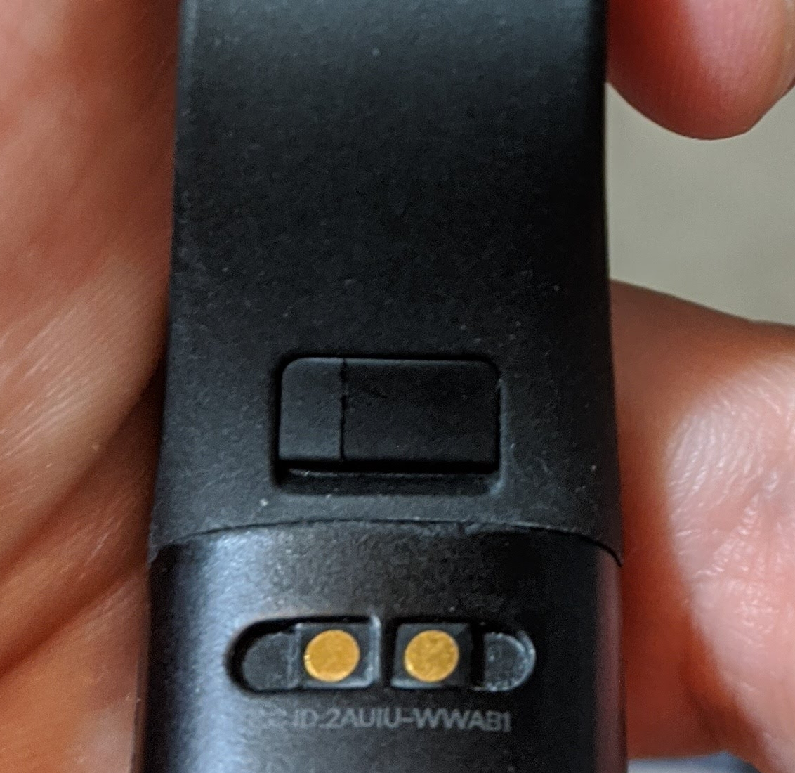
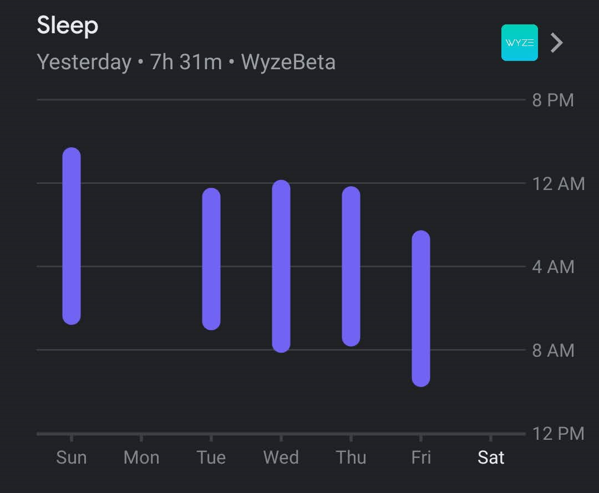

Wyze Products Update
Table of Contents
Introduction
A few months ago I posted my reviews of the new Wyze Band and Scale.
Since then, there’s been a few things I’ve noticed that I’d like to share.
Band Build Quality
The build quality of the Band has not been great. The two tabs on each side of the Band that hold on the wristband are beginning to crack.

I wear the Band at a comfortable setting for me, if anything, a little loose, so I don’t feel that there is too much pressure being exerted. It’s disappointing that it’s beginning to break so soon into owning it.
Syncing
This is, by far, the most infuriating thing. I can absolutely confirm that the Scale and Band do not whatsoever, unless you manually open up the page for each in the Wyze app. Why this is, I have not a clue. The app is already always running in the background (there’s a persistent notification that tells you as much). Why can’t it try to automatically sync every 24 hours on its own? I haven’t experimented enough to confirm this, but if you forget to sync often enough, you may lose data.

I found that I need to remember to manually sync both devices at least once every 24 hours to not lose any data.
Google Fit
On the bright side, Google Fit integration finally got added to the Band, which is fantastic. I complained about this in my review here.
Conclusion
I don’t think my reviews really changed. The price points are still unbeatable. These are just annoyances to be aware of longer-term.